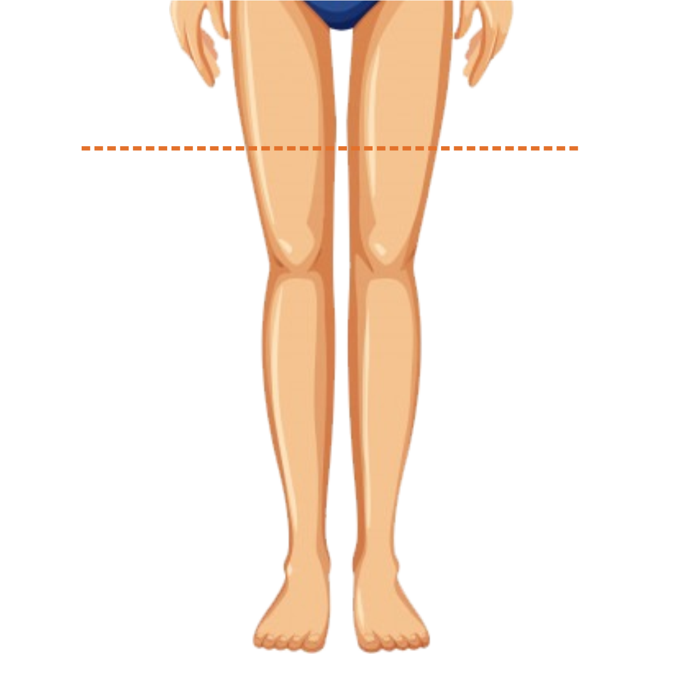

<ion-header>

  <ion-navbar color="cinza1">
    <ion-title>Coxa</ion-title>
  </ion-navbar>

</ion-header>


<ion-content padding>
  
  

  <ion-list>
    <h2>Medida da coxa esquerda</h2>
    <ion-item><ion-input type="text" text-center [(ngModel)]="coxa.coxaEsq"></ion-input></ion-item>
  </ion-list>
  <ion-list>
    <h2>Medida da coxa direita</h2>
    <ion-item><ion-input type="text" text-center [(ngModel)]="coxa.coxaDir"></ion-input></ion-item>
  </ion-list>
 <button ion-button block color="amarelo1" (click)="continuar()">Continuar</button>
</ion-content>
